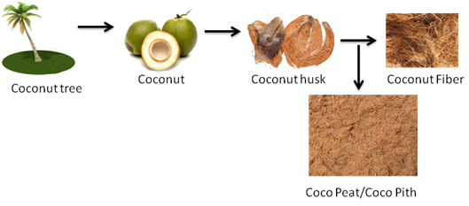

What is Cocopeat/Cocopith |
Cocopeat is a natural fibre made out of coconut husks. The extraction of the coconut fibre from husks gives us this by-product called cocopeat.  Why CocopeatCocopeat or Coir Fiber Pith is derived as a byproduct in the process of fiber extraction from the Husk of the coconut. The eco-friendly material Cocopeat is a 100% natural growing medium. Cocopeat is dried under natural sunlight, and processed to produce various growing mechanisms. Cocopeat has a highly porous material structure. Hence Cocopeat can absorb large volumes of water. Generally Cocopeat can absorb water about half of its volume and 5 to 6 times its weight. Cocopeat has great oxygenation properties. That makes Cocopeat rooting solutions highly suitable for potting mixtures. Its high lignin percentage - 31% - makes cocopeat very stable and slowly decomposing. In general it takes about 10 years to decompose. Even decomposed coir pith is used as hydroponics systems for growing roses. Cocopeat has a carbon-nitrogen (C/N) ratio of 104:1. Cocopeat can store and release nutrients to plants for long periods of time. pH value of Cocopeat ranges between 5.2 and 6.8 which is neutral to slightly acidic. However, for horticultural use, Cocopeat products must have specific chemical and biological standards such as suitable pH-level, electrical conductivity and elemental composition. We have a well-experienced team of agronomists who purchase quality-proofed coir pith. The specifications that have to be fulfilled by Cocopeat are: Density <0.1, Electrical Conductivity <0.5 m S/cm, pH<5.9-6.5, Water holding capacity <8-9 times, Pore space >90%, Expandability > 6 times of the compressed volume. Clean and high-quality coir contain natural rooting hormones and anti-fungal properties. Cocopeat products can be mixed with fertilizers and nutrients according to the specific requirements of the plants. Where Cocopeat products are being usedCocopeat is now used as a medium for seedling nurseries, for bedding plants, for potting mix supplies, for landscaping, and for the hydroponic production of flowers, vegetables, trees, shrubs, compost bins, container gardening, casing layer for mushroom. Currently Cocopeat stands out as the eco-friendly and more reliable replacement for the sphagnum peat moss, rock wool and sawdust. Our Cocopeat-based products provide an excellent growing and rooting medium for hydroponics or container-based plant growing. Advantages of Cocopeat
|

Biodegradable Cocopeat
Cocopeat is also known as Coir pith, Coir Fiber pith, Coir dust. It is used as a solid additive, due to low level of nutrition content in the Cocopeat it is mixed with nutrients and used as growing medium for plants.
- What is cocopeat and its uses?
- What is the lead time for orders: Shipping time?
- Can you handle custom made packing?
- Where's your company based at ?
- Can you supply us your products regularly?
- Many people often talk of excessive salts in coconut husk based substrates;how does your company deal with this problem?
- Can I use Cocopeat in my present gutter system & containers where I grow Roses?
- Which is the Best Option to contact your company?